A selection from 200+ steel projects I designed in Egypt, Saudi Arabia and the UAE. Open any project to see its models and drawings.
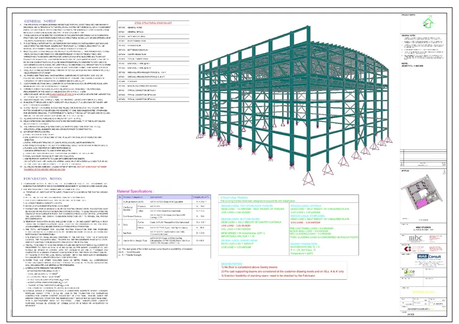
MBC Studios
Al Narjis, Riyadh, KSAHeavy & light steelTV studiosAmerican code
Structural design of heavy and light steel projects in Saudi Arabia, including MBC Studios, Six Flags Qiddiya (Al Nahda – Seven Group), and fuel station canopies. All projects were designed from scratch in compliance with the American code. The MBC TV studios in Al Narjis, Riyadh include framed roof trusses, side-wall framing, catwalks and gantry beams.
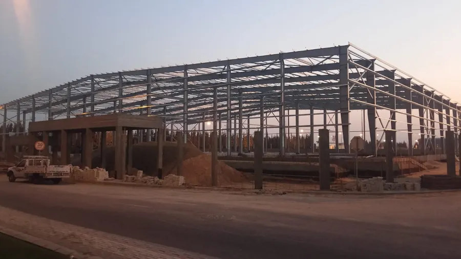
Al Qemam Industrial Warehouse
6th of October, Giza5,850 m²Two mezzaninesEave +12.00 m
Industrial warehouse in 6th of October City, Giza: a 90 × 65 m steel building (5,850 m²) with portal frames, roof and wall bracing, two mezzanine floors at +7.20 and +10.20 m, and bolted end-plate connections. The first image is a site photo after erection.
Canopy at Al-Haram Al-Makki
Makkah, KSACanopyInclined columnsSAP2000
Steel canopy at Al-Haram Al-Makki in Makkah, carried on inclined columns, modeled and designed in SAP2000.
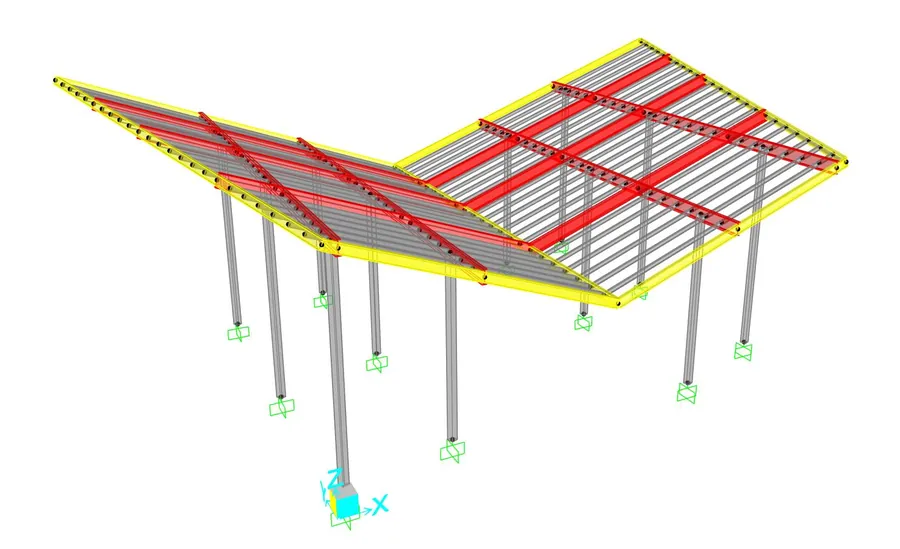
New Cairo Canopy
New Cairo, EgyptButterfly roofSAP2000
Steel canopy with a V-shaped (butterfly) roof in New Cairo, modeled and designed in SAP2000.
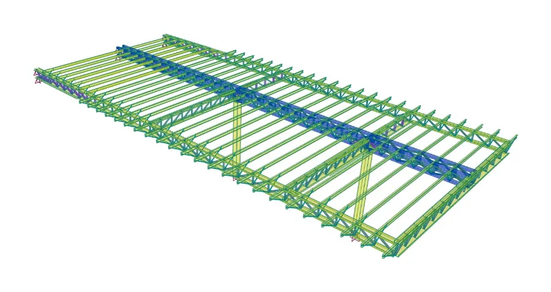
Uptown Cairo Canopy
Uptown Cairo, EgyptEmarat MisrRoof trusses
Steel canopy for Emarat Misr at Uptown Cairo: a large roof framed with steel trusses on both sides of a central spine girder, carried on steel columns.
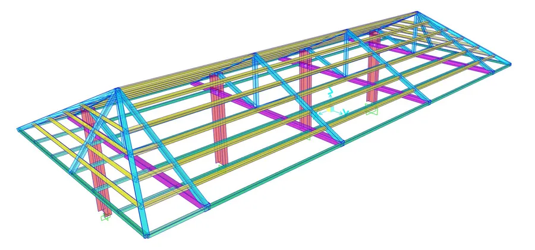
Stadium Steel Shed
New Capital, EgyptHip-roof trussesMetal lath & tiles
Steel shed for a stadium: a hipped roof of steel trusses on a single row of columns, clad with plastered metal lath carrying roof tiles. SAP2000 model plus the full layout and detail sheet.
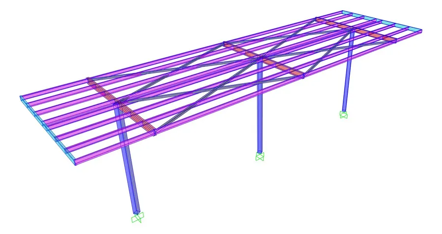
Mobil Safaga Station Canopy
Safaga, Red Sea, EgyptExxonMobilPetrol station
Petrol station canopy for ExxonMobil at Mobil Safaga: steel roof on vertical and inclined columns, foundations and anchor bolts, rain gutters and drainage through the columns.
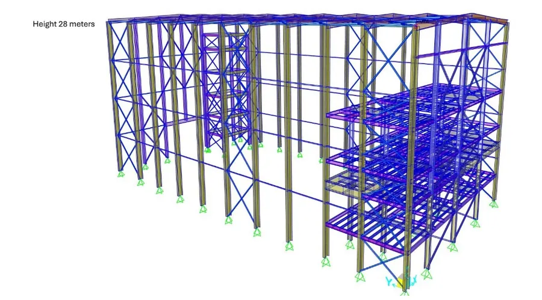
Feed Mill
10th of Ramadan City, Egypt28 m highIndustrial
Steel structure for a feed mill in 10th of Ramadan City, 28 m high, with braced frames and several internal platform levels for the plant equipment.
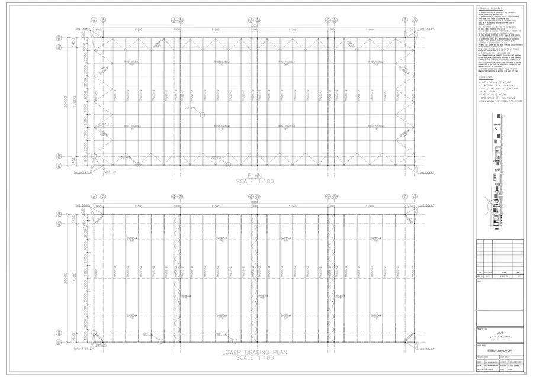
Carrefour Hurghada
Hurghada, Red Sea, EgyptLong-span roofLattice columns
Steel structure for a Carrefour store in Hurghada: a long-span roof of steel trusses on built-up lattice columns, with steel plans, elevations, base plates and connection details.
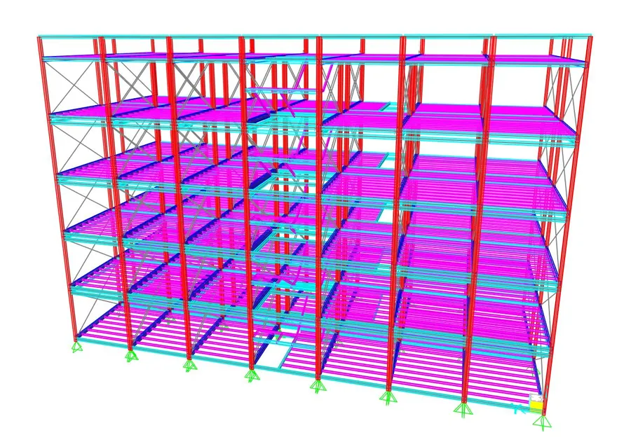
Modular Hotel
Jeddah, KSA6 storeysSeismic design
A fast-assembly 6-storey hotel in Jeddah built from prefabricated caravan modules that are bolted together on site. The structure was designed for the highest seismic value in Saudi Arabia, including the bolted connection that joins the modules.
Ship Al-Alamein
Porto Cruise, El Alamein, EgyptArchitectural steelSAP2000
Steel framing for the curved envelope of Porto Cruise – New Alamein, the first ship-shaped (cruise-liner inspired) residential building in the Middle East (~57,000 m²): hull frames, bow geometry and roof framing, modeled in 3D and designed in SAP2000.
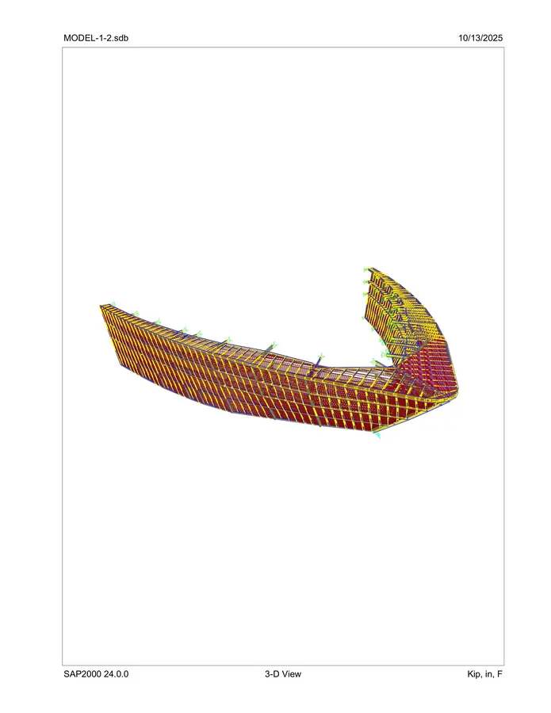
Porto Cruise Alamein
El Alamein, EgyptRoof trussesArchitectural steel
Structural design and 3D modeling of complex steel frameworks for the Porto Cruise Alamein project, including roof trusses and special architectural steel systems. Work involved analytical modeling, load optimization, and ensuring compliance with design codes for stability and constructability.
Kids Water Park
EgyptPlatformsWater slides
Steel platforms, stairs and water slides for a kids’ water park in Egypt; the first image is a site photo after construction. Each slide hangs from its top platform and is carried by steel columns along its descent, modeled in SAP2000 with the slide body as a shell.
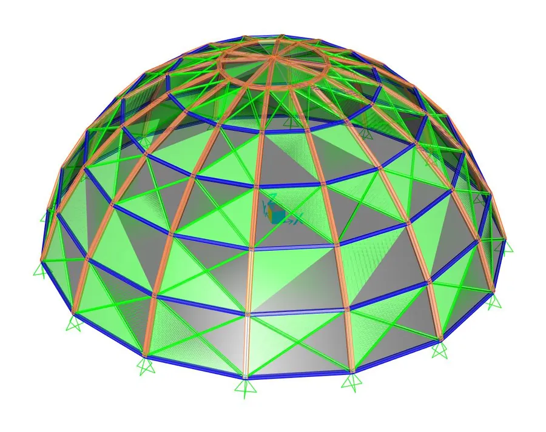
Steel Domes
Cairo, EgyptØ 17.35 mØ 13.35 m
Two steel domes in Cairo, 17.35 m and 13.35 m in diameter, framed with curved ribs, horizontal rings and diagonal bracing.
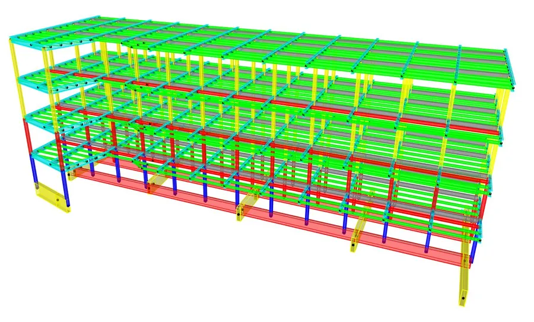
Hotel Vertical Extension
El Alamein, Egypt+4 steel floorsExisting RC hotel
Completing an existing concrete hotel in El Alamein with four additional steel floors. Steel was chosen to keep the added weight, and the reactions on the existing concrete structure, as low as possible.
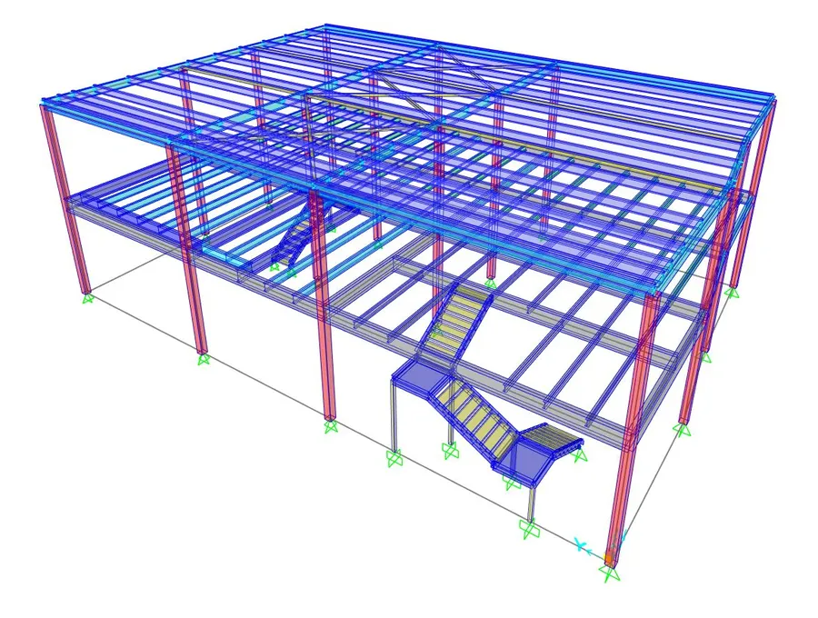
Bank Building – Hyde Park
Hyde Park, New CairoTwo levelsSteel stairs
Two-level steel building for a bank at Hyde Park: floor and roof framing in IPE sections, bolted beam-to-beam connections and steel stairs.
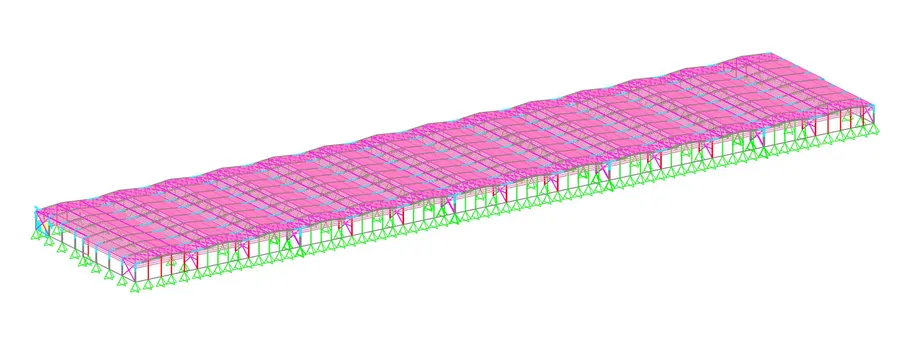
Farm Buildings
Jeddah, KSA30,000 m²Steel sheds
Steel sheds for a 30,000 m² farm in Jeddah: repetitive portal frames, roof purlins and bracing along long buildings.
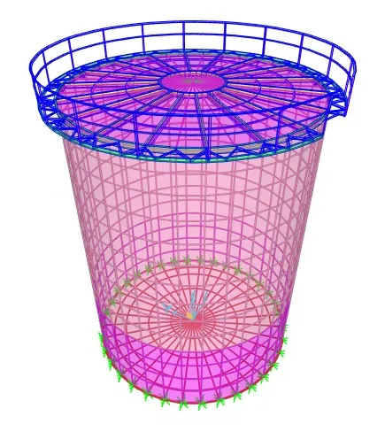
Total Gasoline Tank TK-08
API 650Ø 10.4 m × 13.57 mTotalEnergies
Gasoline storage tank TK-08 for Total, designed to API 650 (13th ed.): shell courses, bottom and roof plate layouts, roof framing, nozzles, manholes, vents, draw-off sump, spiral stair and handrail. SAP2000 model and four layout sheets.
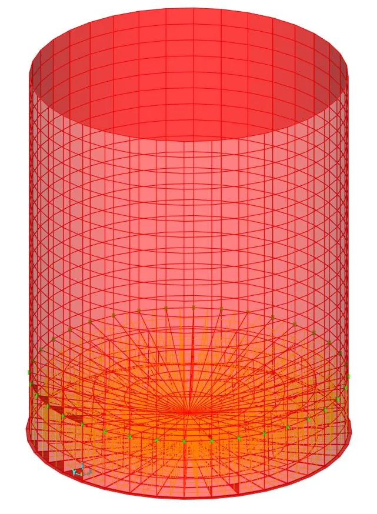
ExxonMobil Gasoline Tank
API 650Ø 9.0 m × 10.5 mExxonMobil
Gasoline storage tank for ExxonMobil, designed to API 650: shell course thicknesses, bottom and annular plates, roof structure, wind and seismic stability checks and anchorage.
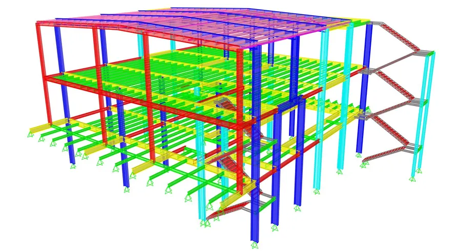
Gymnastics Hall
Riyadh, KSAMulti-level frameExternal stairs
Steel structure for a gymnastics hall in Riyadh: a multi-level frame with a curved roof and external steel stairs.
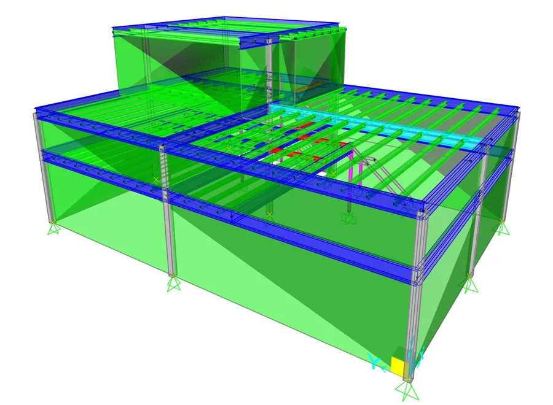
Restaurant
Riyadh, KSATwo levelsSAP2000
Two-level steel structure for a restaurant in Riyadh, with a raised roof section over part of the building.
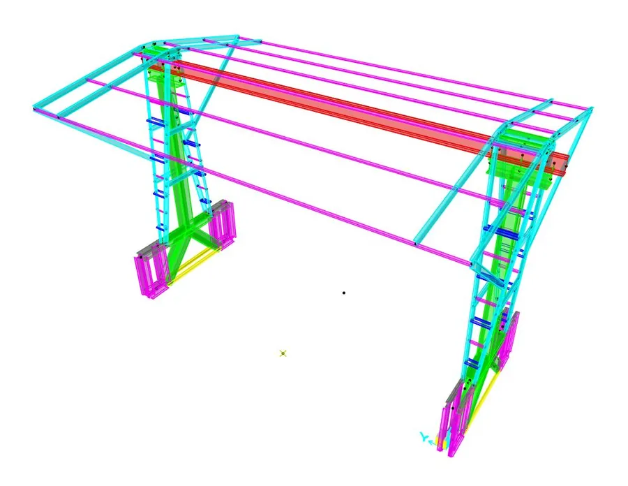
Gantry Crane with Moving Canopy
Gantry craneMoving canopy
A gantry crane that carries its own canopy, so the cover travels with the crane. The legs, access ladders, crane girder and roof framing were designed as one moving structure.
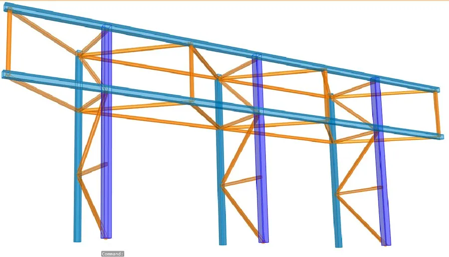
Advertising Sign Structure
Saudi ArabiaHoliday Inn ExpressSteel connections
Steel structure for a large sign board on a Holiday Inn Express project in Saudi Arabia: columns, trusses and bracing, with steel connections, base plates and joint reactions.
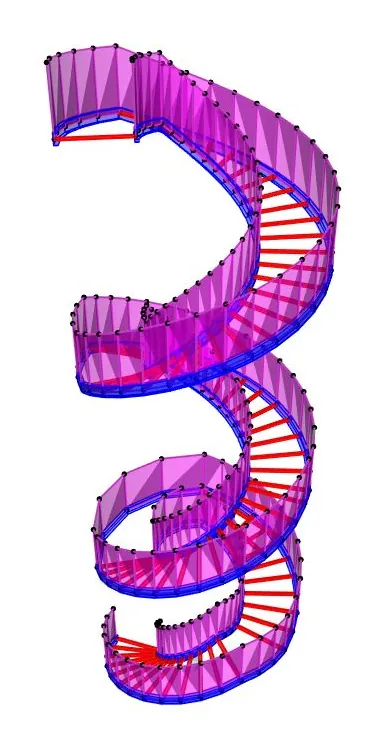
Spiral Staircase
UAEHelical stringersSAP2000
Steel spiral staircase in the UAE with helical stringers on both sides and treads spanning between them.
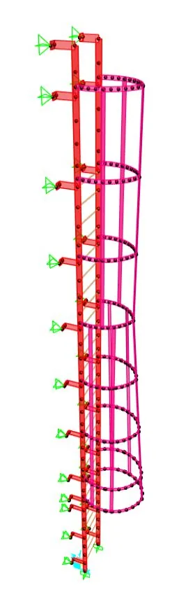
Caged Access Ladder
Jeddah, KSASafety cageSAP2000
Caged access ladder in Jeddah, fixed to the structure at regular intervals.
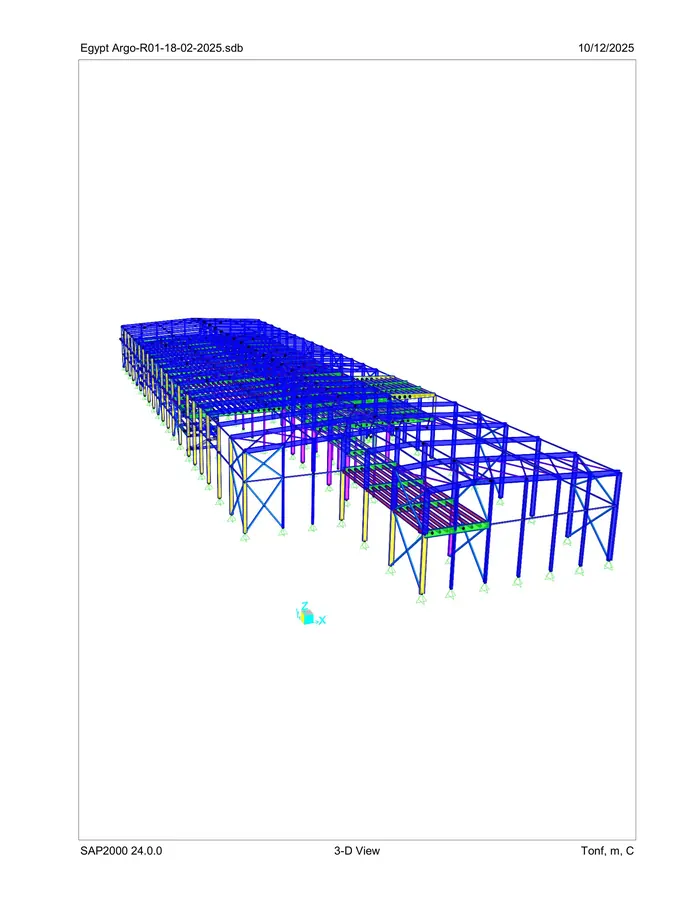
Various Projects
EgyptWarehousesHangarsShop drawings
Structural design and modeling of several steel projects, including warehouses, hangars, and architectural frames. All designs were developed from scratch according to American and Egyptian codes, ensuring strength, stability, and safety.
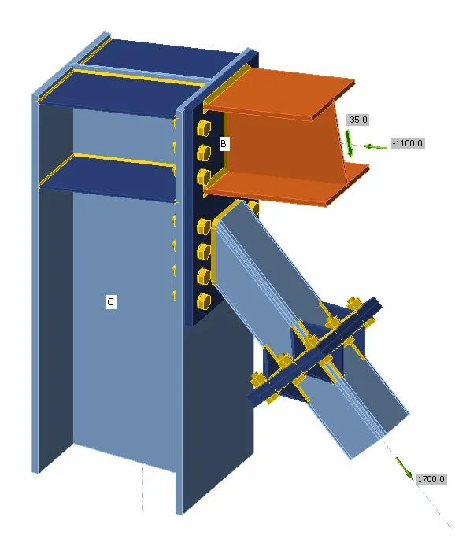
Connection Design
IDEA StatiCaBolted & weldedBase plates
Steel connection design and checks in IDEA StatiCa: bolted end-plate moment connections, beam-to-column and beam-to-beam shear connections, bracing connections, splices, and column base plates with anchor bolts, each checked for its design forces.
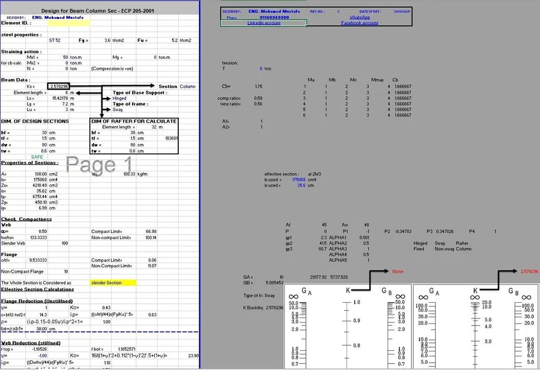
Excel Automation
ExcelDesign sheets
Development of customized Excel sheets for structural analysis, load calculations, and steel design automation, enhancing accuracy, speed, and overall design efficiency.
Calculation Note
PDF126 pages
A full design calculation report for secondary steel supporting a refrigeration system: loads and load combinations, SAP2000 analysis, member and bolt design, deflection checks and support reactions.